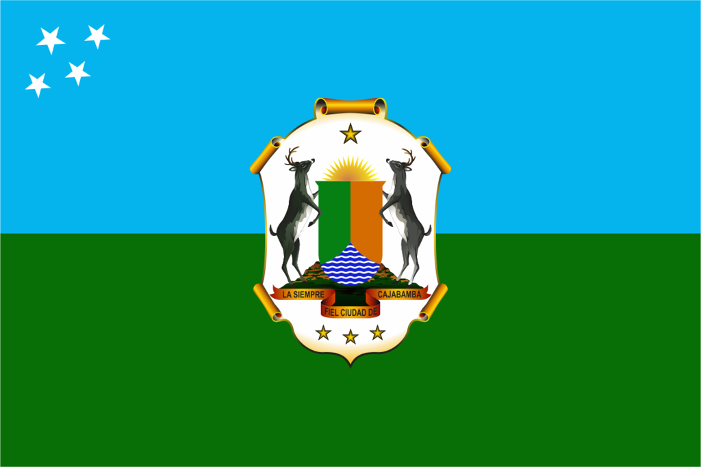

About Me
Hello! my name is Bruce Meléndez and I from Cajabamba, Peru. I have been a member of The Church of Jesus Christ of Latter-day Saints since I was 13 years old. I served a mission in the Peru Lima West Mission. I enjoy doing many things, including riding bicycles, driving cars, spending time with friends and family, watching movies, and I also like anime. I have a hobby that is being able to take photographs of landscapes, I have had the opportunity to travel to some places in Peru and I have not missed the opportunity to take as many photos as possible. I am currently 23 years old and every day I learn about life and its challenges. I am blessed to have the best girlfriend in the world ♡.
Cajabamba, Peru
Cajabamba is a Peruvian city, the capital of the district and province of the same name, located in the department of Cajamarca. The district has a population of approximately 30,000 inhabitants. The city of Cajabamba was declared a historical monument of Peru on June 26, 1987.